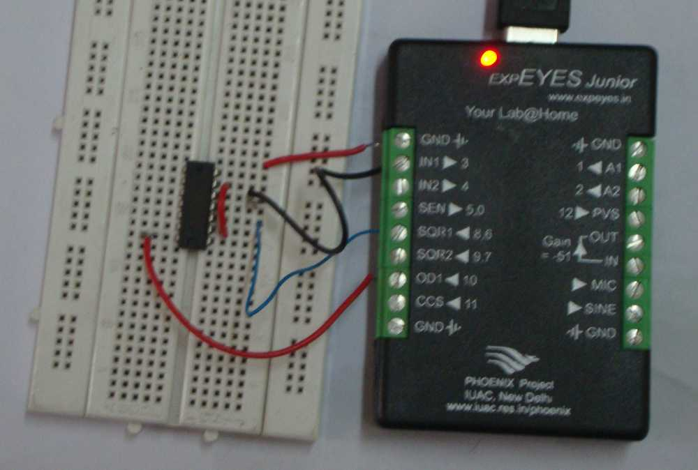

A frequency divider circuit is wired using the D type Flipflop TTL IC 7474. The schematic and the waveforms are shown below. The output duty cycle is always 50% irrespective of the input waveform dutycycle. The flipflop toggles the output at every rising edge of the clock input.
